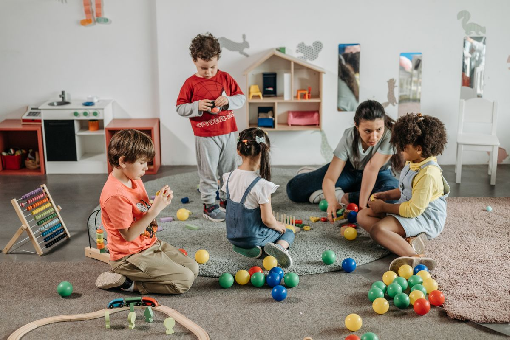
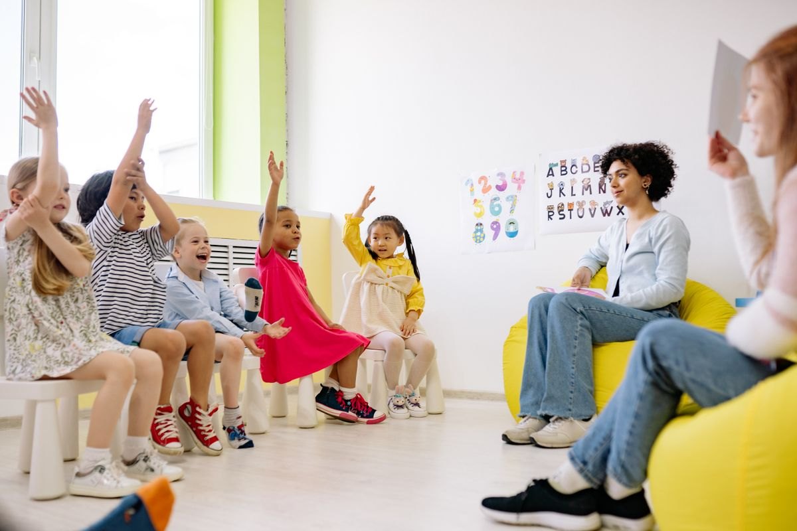
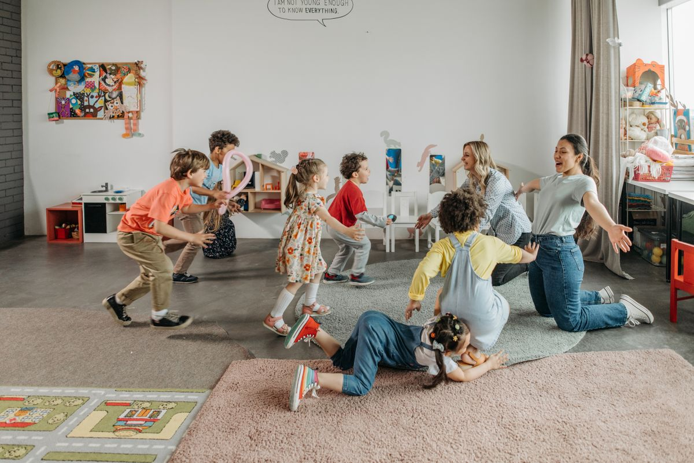
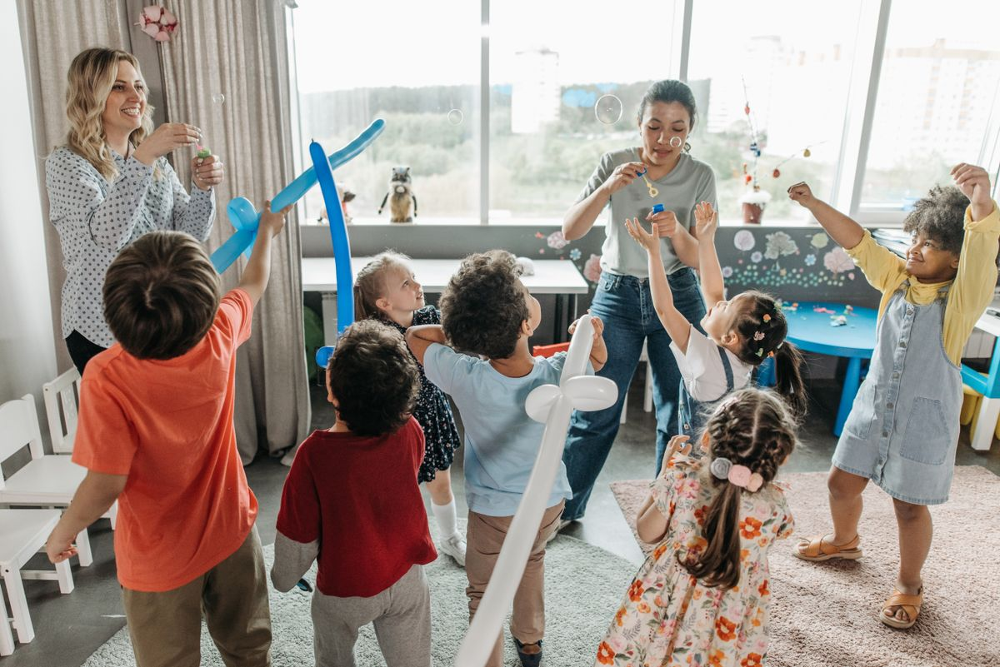

Infants
Gentle, responsive care supports feeding, rest, sensory exploration, movement, and attachment.
Programs
Each program balances secure routines, child-led play, outdoor time, creative expression, and caring guidance.

Gentle, responsive care supports feeding, rest, sensory exploration, movement, and attachment.

Toddlers are supported as they build language, independence, friendships, and self-help skills.

Preschoolers investigate ideas through art, stories, dramatic play, blocks, music, and outdoor discovery.

Before and after school care offers steady transitions, playful projects, snack, and social time.
School age children have space for choice, friendship, active play, and meaningful group experiences.